Plugin @spiplistes_name@ version @spiplistes_version@ - Mise à jour documentation: $LastChangedDate: 2011-03-11 15:08:24 +0100 (Ven 11 mar 2011) $EndLastChangedDate
Avertissements (version test) : cette documentation est en cours de réalisation.
@spiplistes_name@ est un plugin pour SPIP permettant la gestion de courriers au sein d'un groupe de travail.
@_aide@Cette page vous présente les principales fonctionnalités de @spiplistes_name@. Cette documentation n'est pas exhaustive, la plupart des actions sont commentées dans l'interface de gestion de @spiplistes_name@.
La dernière version de @spiplistes_name@ est disponible sur SPIP-zone.
La page de configuration de @spiplistes_name@ est accessible par le bouton du même nom :
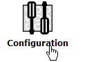
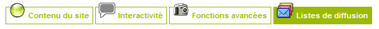
Cette page vous permet de configurer :
Vous pouvez également forcer ici tous les abonnements.
Par défaut, à l'installation - ou lors d'unemise à jour - de @spiplistes_name@, l'envoi de courriers est simulé afin de vous permettre de valider le bon fonctionnement de l'outil.
Lorsque vous aurez réalisé tous les tests nécessaires, vous pouvez activer les envois de courriers en validant Activer les envois de courriers dans le menu de configuration de @spiplistes_name@.
N’installez pas @spiplistes_name@ en production sans l’avoir testé et validé correctement.
@spiplistes_name@ est diffusé gratuitement sous licence GNU/GPL, sans aucune garantie de bon fonctionnement. Vous êtes seul responsable de l’installation et de la mise en œuvre de @spiplistes_name@ sur votre site.
Vous devez être administrateur pour pouvoir accéder à la gestion du courrier.
Après avoir activé le plugin, sélectionnez dans le menu Edition le sous-menu Listes de diffusion :
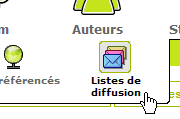
Trois onglets apparaissent, ainsi qu'une boîte de raccourcis. L'ensemble vous permet de gérer le courrier :
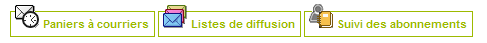
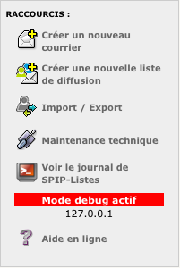
Le raccourci Maintenance technique n'est accessible qu'à l'administrateur principal du site. Si vos listes de courriers deviennent trop importantes, adressez-vous à lui, il pourra améliorer la situation grâce à cette option.
Deux modes de créations vous sont proposés :
Les courriers ne peuvent pas être paramétrés pour être envoyés périodiquement. Si vous voulez qu'un courrier puisse être envoyé tous les 3 jours ou tous les mois, vous devez le transformer en patron et créer une liste de diffusion.
Un patron est un squelette SPIP.
Les patrons fournis, et ceux que vous pouvez créer et rajouter à la liste, permettent la génération automatique du courrier, à la date d'expédition souhaitée. Ainsi, si vous réalisez un patron qui résume une de vos rubriques, ce résumé sera généré à chaque date périodique d'envoi souhaitée.
Il n'en est pas de même avec un courrier. Le contenu du courrier est lui, généré à la date de sa création. Ce contenu peut être généré à partir d'un patron, mais il est important de noter que le contenu généré ne le sera pas plus tard. Par contre, ce contenu est éditable. Vous pouvez le modifier après sa création, ce qui n'est pas possible avec une liste de diffusion.
Lorsqu'une liste de diffusion est expédiée, le contenu généré devient à son tour un courrier qui apparaît dans le casier Courrier automatique publié.
Le casier à courriers permet de lister, dans l'ordre :
La diffusion : une liste peut être privée (interne) ou publique. L'inscription à une liste privée n'est pas visible dans l'espace public.
Si vous transformez une liste périodique en liste publique, elle conserve ses abonnés, mais perd sa date de publication. Il vous faut programmer à nouveau un envoi automatique.
Si vous transformez une liste périodique en liste privée, elle perd également sa date de publication, mais aussi ses abonnés invités.
Le webmestre du site peut déléguer la gestion d'une
liste de diffusion à un autre administrateur, même
restreint à une rubrique vide.
Le webmestre doit avant tout créer une liste de diffusion et y ajouter le modérateur ainsi que les destinataires et ne pas oublier les patrons.
Le modérateur peut ensuite éditer un courrier et l'envoyer à cette liste, ou à une adresse email.
Le champ de réponse (reply-to) est transmis lors de la diffusion. Il correspond à l'adresse email de retour. Lorsque votre correspondant répondra à votre courrier, sa réponse sera envoyée à cette adresse.
Le planning des diffusions des listes est disponible sur le page de gestion des listes.
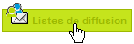
Le planning apparaît graphiquement pour les 10 ou 45 jours suivants (cliquez sur la loupe pour passer de l'un à l'autre). Il vous permet d'envisager un éventuel engorgement des envois.
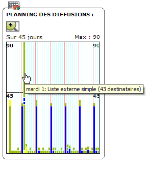
Vous pouvez accéder directement à la liste souhaitée en cliquant sur sa barre du planning.
Les listes de diffusion peuvent exceptionnellement être envoyées à une date précise. Il suffit d'indiquer la date d'envoi souhaitée dans le formulaire de la liste concernée.
Lorsqu'une liste de diffusion publique est correctement paramétrée (sélection des patrons, liste d'abonnés), vous pouvez choisir pour elle une diffusion périodique en jours, hebdomadaire, mensuelle ou annuelle.
Vous pouvez paramétrer l'expédition d'une liste de diffusion en lui définissant :
Le courrier est généré à partir des patrons précisés à la date planifiée.
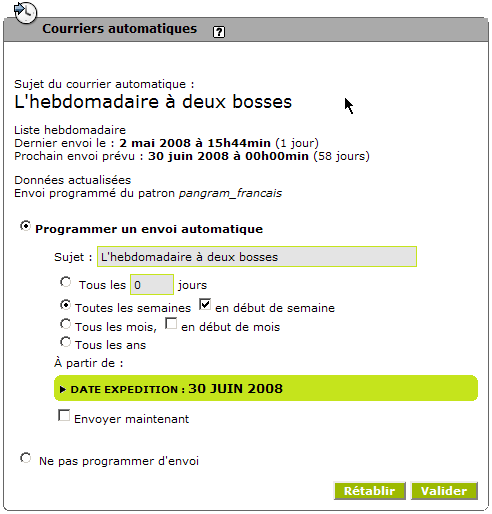
Dans l'exemple ci-dessus, le courrier sera envoyé toutes les semaines, le lundi, à partir du 30 juin 2008. A noter qu'il est inutile de calculer la date précisément. Si vous validez dans cet exemple le 31 juin, qui est un mardi, la date sera automatiquement corrigée pour le 30 juin 2008, qui est un lundi.
Si le bouton Envoyer maintenant est grisé, c'est que la liste ne contient aucun abonné.
Lorsque vous avez terminé la rédaction de votre courrier, vous pouvez l'envoyer en test à un correspond ou vous-même, en complétant le champ email de test et en le validant par le bouton Tester par email :
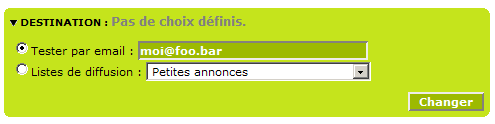
Cette adresse email doit être valide. En cas d'erreur, un message vous alerte.
Pour tester l'envoi d'une liste de diffusion (chrono), créez une liste d'abonnés contenant votre adresse email, testez un premier envoi par l'envoi immédiat, puis - si le test correspond à vos attentes - modifiez la liste des abonnés.
Si un abonné n'a pas défini son format de réception de courriers, texte seul ou enrichi (html), aucun courrier ne peut lui être envoyé via @spiplistes_name@ (liste sur abonnement ou courrier simple).
Pour forcer ce format de réception, affichez la page de suivi des abonnements :
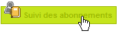
En bas de page, la liste des auteurs apparaît :
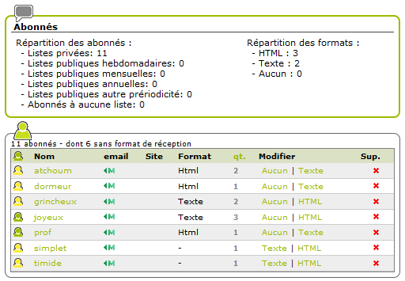
Une puce noire dans la colonne email indique que l'auteur ou le visiteur n'a pas précisé son adresse de courrier électronique. Impossible de l'abonner !
La colonne qt. indique le nombre de listes auxquelles l'abonné est inscrit.
La colonne Format précise le format de réception actuel de l'abonné.
Vous pouvez modifier son format de réception en cliquant sur l'une des options présentes dans la colonne Modifier.
En cliquant sur le nom du compte, vous accédez à la page permettant de modifier son format de réception, mais également de suspendre temporairement son abonnement, de le désabonner de toutes les listes :
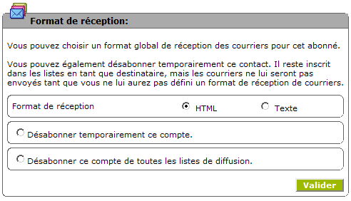
Lors de l'édition d'une liste, vous pouvez forcer l'abonnement :
Pour ajouter ou retirer un abonné d'une liste, éditez la liste concernée. La boite des abonnés à cette liste se trouve dans la bas de la page :
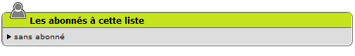Dans l'exemple ci-dessus, il n'y a pas d'abonné pour cette liste.
Dépliez la boite en cliquant sur le petit triangle et sélectionnez les comptes utilisateurs à ajouter.
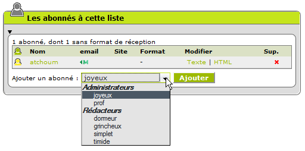
Notez au passage que si la liste est privée, les comptes invités n'apparaissent pas dans la liste proposée.
Lorsqu'une liste publique devient privée, elle perd tous ces membres invités. Une confirmation vous est demandée avant la modification du statut de cette liste.
A noter : un membre abonné ne reçoit pas forcément le courrier de cette liste. Il faut parfois attendre qu'il confirme lui-même le format de réception : html ou texte seul. C'est le cas par exemple s'il s'inscrit via la formulaire abonnement.
Voir aussi : Forcer tous les abonnements.
Deux balises sont disponibles :
Le squelette abonnement.html permet d'illustrer l'utilisation de cette dernière balise. Par exemple :
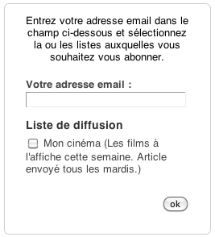Deux autres balises permettent de gérer les abonnements :
Le squelette abonnement.html illustre l'utilisation de cette dernière balise.
Ce squelette est dans le répertoire du plugin.
La balise #FORMULAIRE_SPIP_LISTES_INSCRIPTION renvoie une confirmation par mail laconique.
Si vous souhaitez adapter une réponse de confirmation d'abonnement, utilisez plutôt la balise #FORMULAIRE_ABONNEMENT après avoir adapté le patron patrons/messages_abo/standard.html et standard_text.html (recopiez ces deux patrons dans votre dossier de squelettes en respectant la hiérarchie).
Vous pouvez également adapter le squelette abonnement.html. Toujours dans le même principe : recopiez ce squelette dans votre répertoire de squelettes, adaptez-le à vos besoins et pour que vos visiteurs accédent à cette nouvelle page, ajoutez un lien dans les autres squelettes, vos menus, etc. Ce lien doit être du style http://votre_site/?page=abonnement
Pour abonner un auteur à une ou plusieurs listes, cliquez sur l'icône Auteur :
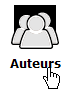
Dans la liste, sélectionnez l'auteur pour faire apparaître sa fiche. En bas de cette fiche se trouve la boîte Abonnemens aux courriers :
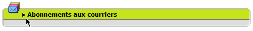
Cliquez sur le petit triangle à gauche du titre de cette boîte pour déplier cette boîte et laisser apparaître la liste des listes de diffusion publiques disponibles. Sélectionnez ou désélectionnez les abonnements nécessaires et validez.
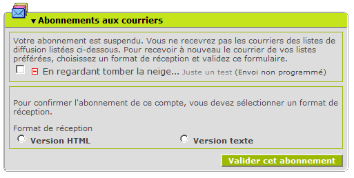
Validez si besoin le format de réception pour confirmer l'abonnement (si pas de format de réception validé, il n'y a pas d'envoi pour ce compte).
Si vous éditez une fiche visiteur, seules les listes publiques apparaissent. S'il n'y a pas de listes publiques, la boîte de sélection Abonnement n'apparaît pas.
Pour abonner un auteur à une liste, survolez l'icône Edition puis cliquez sur l'icône Listes de diffusion :
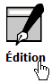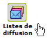
Le casier des courriers apparaît. Cliquez sur l'onglet Listes de diffusion pour afficher la liste des listes de diffusion.
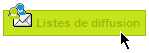
S'il n'y a pas de liste, créez-en une puis revenez sur cette page.
Cliquez sur le titre de la liste de diffusion pour faire apparaître la page d'édition de la liste. Après le bloc principal se trouve le bloc des abonnés à cette liste.
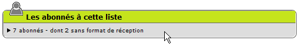
Dans l'exemple ci-dessus, la liste concernée à 7 abonnés dont 2 ont suspendu leur abonnement à cette liste.
Cliquez sur le petit triangle pour déplier le bloc des abonnés. Ajoutez vos abonnés.
Un abonné doit toujours avoir une adresse email valide et un format de réception (texte ou HTML). Sans ce format de réception, l'abonné reste abonné, mais aucun courrier ne lui sera envoyé. Pour confirmer le format de réception, voir le paragraphe Confirmer le format de réception.
Les super-administrateurs (admins toutes rubriques) peuvent forcer les abonnements aux listes, au format html ou texte seul. Ils peuvent également désactiver tous les abonnements.
Forcer les abonnements ne veut pas dire abonner les comptes et donc expédier les courriers programmés. Les utilisateurs devront valider cet abonnement en sélectionnant un format de réception, html ou texte seul. Si l'utilisateur ne valide pas un format de réception, il reste abonné, mais le courrier ne lui est pas envoyé.
Vous pouvez toutefois forcer réellement l'abonnement en sélectionnant le format de réception, html ou texte, dans la page du Suivi des abonnements.
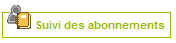
Voir aussi : Forcer tous les abonnements pour une liste.
Le format de réception de courrier est global par abonné. L'abonné ne peut pas recevoir un courrier au format texte, un autre au format HTML.
Si l'abonné ne définit aucun format de réception, il reste abonné, mais ne recevra aucun courrier.
Vous pouvez forcer le format via la fiche auteur (voir Abonnement via la fiche auteur) ou par la page de la liste.
Pour modifier le format de réception via la page de la liste, éditez la liste de diffusion puis cliquez sur le nom d'un abonné dans la boite des abonnés :
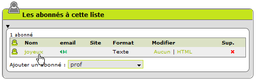
La page d'édition de l'abonné apparaît et vous permet de valider le format, suspendre l'abonnement, etc.
Vous désirez suspendre le plugin sans pour autant supprimer ses données ? Rendez-vous dans l'interface de gestion des plugins et cliquez sur la case à cocher de @spiplistes_name@.
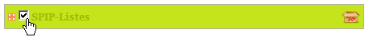
Un patron est un squelette au sens SPIP du terme. Plutôt un morceau de squelette, proche de la noisette.
Corps de votre message ou pied de page, ce patron doit se trouver dans le répertoire des patrons.
Les différents dossiers dans le répertoire du plugin :
| patrons/ | Placez dans ce répertoire les principaux patrons, ceux du corps de votre message | Le patron choisi sera appliqué à la liste de diffusion. |
| patrons/lien_en_tete_courriers/ | Patrons des en-têtes de messages. En général, un patron placé ici contient un lien sur le message permettant au lecteur de consulter le message directement sur le site. | L’administrateur du site doit activer ces
fonctionnalités via le menu de configuration. Le patron choisi sera appliqué à tous les courriers sortants au moment de l’envoi. |
| patrons/tampons_courriers/ | Le tampon des courriers est appliqué en fin de message. | |
| patrons/pieds_courriers/ | Ce patron est placé en fin de votre message. Il apparaitra avant le tampon si ce dernier est activé. | Le patron choisi sera appliqué à la liste de diffusion. |
Il est possible d'adapter un patron au format de réception 'texte seul'. Le plus simple dans ce cas est de créer dans votre répertoire de squelettes un dossier "patrons" puis un patron nommé "<mon_patron>_texte.html". Par exemple, si vous désirez préparer un patron au format 'texte seul' pour les nouveautés, copiez le patron "nouveautes.html" dans le répertoire "plugins" situé dans celui de vos squelettes, renommez ce patron "nouveautes_texte.html" et adaptez-le à ce format 'texte seul' (retirez tous les éléments HTML, etc.).
Si vous désirez faire figurer un numéro dans le titre de votre message (par exemple: Courrier de mon association n° 24), il est possible d'insérer une balise 'a-la-SPIP' dans le champ sujet. Cette pseudo balise est calculée lors de l'envoi de la liste de diffusion.
Exemple :
Pour un courrier dont le numéro correspond au numéro de la semaine dans l'année :
Courrier de la semaine [(#DATE|affdate{'W'})]
Vous pouvez incrémenter ce numéro via le filtre 'plus'. Par exemple pour ajouter 100 au numéro de la semaine :
Courrier de la semaine [(#DATE|affdate{'W'}|plus{100})]
Les images contenues dans les articles sont présentées
dans les courriers sous forme de lien URL. Les images restent sur votre
serveur. Elles sont appelées à l'affichage de votre
courrier. Cela évite d'alourdir un courrier en n'acheminant que
le strict nécessaire : le contenu texte.
Il est possible d'incruster une image, directement dans votre message,
sans lien URL. Cette méthode convient bien pour l'incrustation
automatique des tampons, signatures de messages, ou toute autre image
permanente de petite taille.
Le patron patrons/pieds_courriers/pied_logo_image.html
illustre cet usage.
D'autres options sont disponibles pour la personnalisation du sujet d'un nouveau courrier via les filtres :
Par exemple :
Catalogue [(#DATE|saison|ucfirst)] ( [(#DATE|nom_mois|ucfirst)] )
donnera à votre message, lors de l'envoi, le sujet du style :
Catalogue Hiver ( Février )
Pour désinstaller @spiplistes_name@,
rendez-vous dans l'interface de gestion des plugins et cliquez sur
l'icône spip-pack (carton ouvert) qui se trouve à droite
de la ligne concernant @spiplistes_name@. Une
confirmation vous est demandée (Effacer TOUT), confirmez.
Sous SPIP < 2, le carton apparaît à droite :
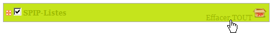
Sous SPIP 2, dépliez le plugin pour avoir accès au carton
:
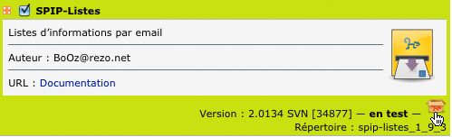
Attention: désinstaller @spiplistes_name@
supprime les tables de @spiplistes_name@ dans votre
base de données. Vous perdez vos courriers et les listes
d'abonnement. Si vous désirez conserver les données de
ces tables dans votre base, sélectionnez plutôt la case
à cocher à gauche de @spiplistes_name@
pour désactiver le plugin.